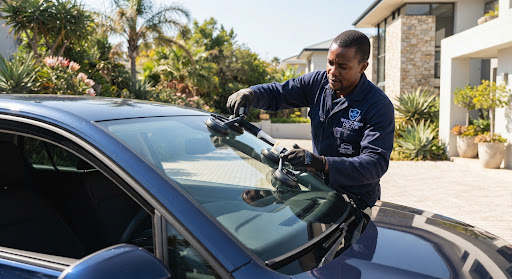
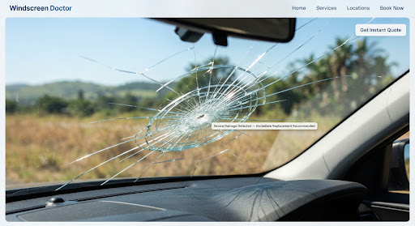
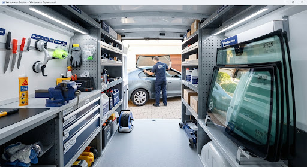

We come to you
Choose a suitable home, office or other location where the vehicle can remain safely parked.
When repair is not suitable, we arrange a complete windscreen replacement at a convenient home or workplace location.

Share the vehicle specification and location first so the proposed glass, service requirements and appointment can be confirmed before the visit.
Choose a suitable home, office or other location where the vehicle can remain safely parked.
The price and glass specification depend on the vehicle year, make, model and fitted features.
We identify whether cameras or driver-assistance equipment may require recalibration after replacement.

Not all windscreen damage can be stabilised with resin. Replacement may be the appropriate route when visibility or structural integrity is affected.
Provide vehicle details, location and photographs of the damage.
We use the vehicle information to identify the correct windscreen specification.
A technician attends the agreed location and completes the installation.
Follow the technician's safe-drive-away and aftercare guidance.
Mobile fitment requires organised tools, glass handling equipment and installation materials. Your vehicle details help the team prepare for the appointment.
Explore Mobile Fitment